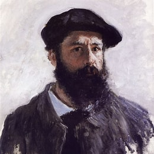

Author
Impression, Sunrise (Impression, soleil levant), painted by Claude Monet in 1872, is a defining work of the Impressionist movement. Depicting the port of Le Havre, Monet's hometown, the painting captures the harbor during sunrise with a soft, atmospheric quality. It was first exhibited at the "Exhibition of the Impressionists" in Paris in April 1874, where its title inspired the name of the Impressionist movement. The artwork, typically housed at the Musée Marmottan Monet, has recently been displayed at the Musée d'Orsay and is currently on loan at the National Gallery of Art from September 8, 2024, to January 19, 2025.
Monet created a series of works showcasing the port of Le Havre in 1872, portraying it at different times of day and from varying perspectives. Impression, Sunrise gained fame after its debut in 1874, during an exhibition organized by Monet, Edgar Degas, Camille Pissarro, and others. Despite mixed reviews from critics, the exhibition attracted about 4,000 visitors. The painting later faced a dramatic episode when it was stolen from the Musée Marmottan Monet in 1985 but was recovered in 1990 and returned to public display in 1991.